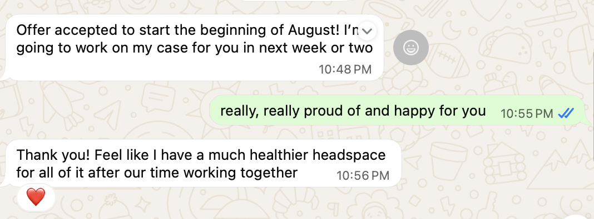

BLOG
Case Study: Why I Told Liz Not to Get a Job (And How She Got One Anyway)
2026-08-24
Liz is a customer-centric marketer with expertise in the retail space. We worked together for 3 months.
The Situation
Liz was taking some time off after having her second child. As she started to think about getting back into the workforce, she noticed she was having a hard time landing on a professional “spiel” that still fit.
“I was struggling with how to tease out what I really wanted to do with my life and how to center my priorities.
When I started working with Larissa, I wasn't sure about making the investment. As a mother, it can be hard to prioritize yourself and invest time, cost, and effort in yourself. It sounds silly now that I've found our time together so fruitful.”
The Solution
I noticed that Liz wasn’t unhappy per se. She was conflicted. And this is why I didn’t think she should charge out there interviewing everywhere. You can’t exactly run towards something with purpose if you’re not clear on what you’re running from. So here’s what we did:
1. Define Stay-At-Home-Mom on your own terms
The first thing we worked on was to ground Liz confidently in her version of being a stay-at-home mom. After spending her 20s charging down a career path that would lead to the COO or CEO suite at work, Liz wasn’t sure what to make of now being the COO of the household. Especially with all the chatter out in the world about how a woman should feel about it. (Boy, am I familiar with this.)
“In the beginning, my thoughts were scattered and unclear and my goals were a bit squishy. Larissa was able to celebrate the things that were making me happy and take some guilt and "shoulds" from the way I spoke to myself.
I walk about feeling so much more grounded in the things that make me happier and better able to slough off negative self-talk and some of the heaviness of external expectation. ”
2. Powerful self-leadership everywhere.
We tend to think of leadership as a thing you show at work. But what does it mean to exercise self-leadership in your entire life? Once Liz reconnected with what she wanted from her life, she learned to make it happen (ie. influence the world to give you what you want = aka power). She stopped second-guessing. She asked nicely and firmly for help. She held fast to what she wanted and ditched all the heavy baggage about what she should want.
“The biggest things that I took away from our coaching together was clarity around what it means to be a woman negotiating with power. That allowed me to better prioritize my values and how that can fit with my career aspirations.”
3. Get the right job for right now.
All along, Liz was applying to, and successfully advancing through rounds of, jobs that she was secretly relieved to not get. What was that about? It’s as if she only knew how to apply to a certain type of job, one that used to make sense, but no longer fit the priorities and realities of this current season.
“Larissa helped me to better understand my new motivations and be more present with both personal and professional opportunities that brought me joy. She helped me to think and talk through what makes me happy, how to take some of my ego out of the mix, and follow through on and chase opportunities that felt right.”
The Results
Over our time working together, I saw Liz go from shedding tears about the things she wasn’t doing to being enamored with this temporary period in her life where she doesn’t have to think about work. She showed up for friends and family in times of crisis, she had FUN, she hung out with her daughter on a school field trip and didn’t have to apply for PTO!
And then, towards the end of our 3 months together, Liz knew that she was ready for more.
This time, she knew the exact types of jobs that made sense for her right now…

“Since working with Larissa, I got a job offer that will bring me back into the workforce after more than two years out of the game. I have more clarity around what I am looking to get out of my career in the medium-term and I am prioritizing my happiness and must-have values over external noise. I needed coaching that was a bit less conventional and Larissa's creativity and flexibility made her a great fit for the moment I was in.”
What if…?
Recently, I caught up with Liz after she started her new job and asked her, what would’ve happened if we hadn’t worked together?
“If we hadn't worked together, I would still probably have too many thoughts and concerns impeding me from taking steps. I would likely feel stuck and unable to appreciate the many of the blessings in my life. Or I would’ve still gotten a job, but I would’ve felt bad inside.
Instead, I know this step is right for me and for my family.”
If you need support to figure out the right career step for the next season of your life, let’s talk. Apply for a free strategy session here.